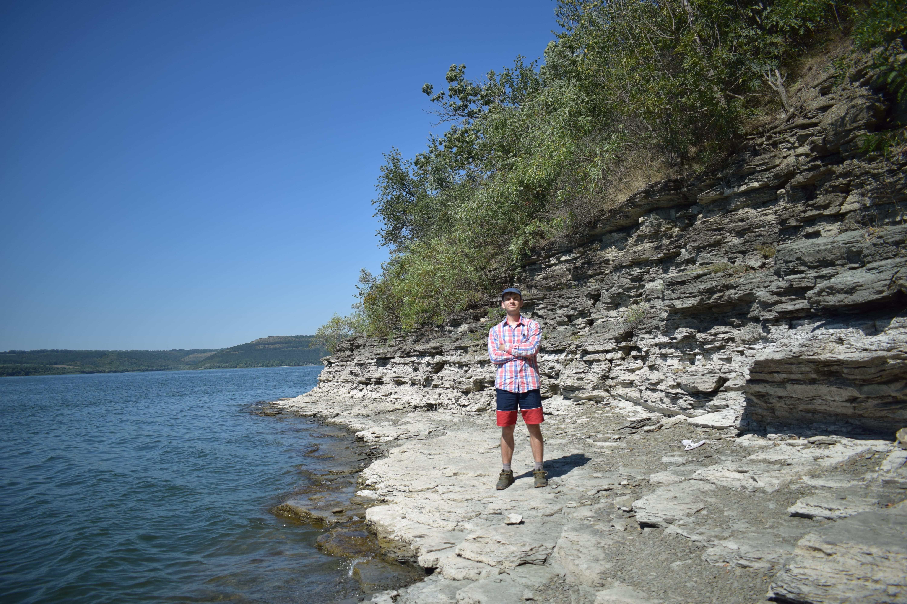
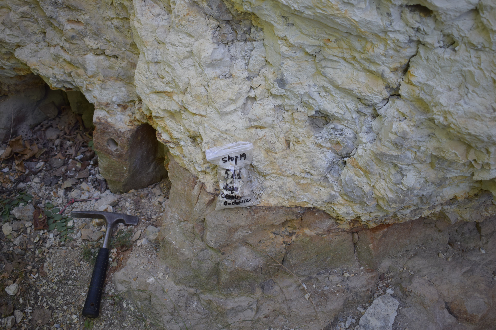
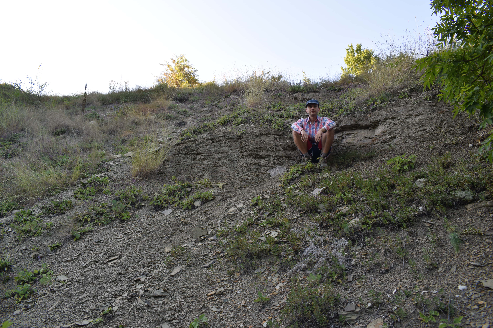

Outcrops, fieldwork days, and everything in between — from the Dniester valley sections of northern Moldova to the sections of Podillya in Ukraine.
Fieldwork is where geology happens. No matter how sophisticated the laboratory analyses — isotope geochemistry, cathodoluminescence, XRF — everything begins at the outcrop: the hammer, the hand lens, the notebook, and a cliff face that has been waiting 541 million years to be described.
The sections along the Dniester river and its tributaries in Podolia are among the most important exposures of the Ediacaran–Cambrian boundary succession in Europe. Working there is a privilege. These photographs are a record of that work — and of the landscape it takes place in.



my-website folder, create a new folder: img/fieldwork/outcrop-01.jpg, dniester-cliff.jpg<div class="photo-placeholder"> block and replace it with:<img src="img/fieldwork/your-photo.jpg" alt="Brief description">
<div class="photo-item"> block and paste it inside the <div class="masonry"> — the grid reflows automatically<div class="photo-item"> blockTip: compress your photos before uploading (use squoosh.app — free, no install needed). Aim for under 300KB per image for fast loading.